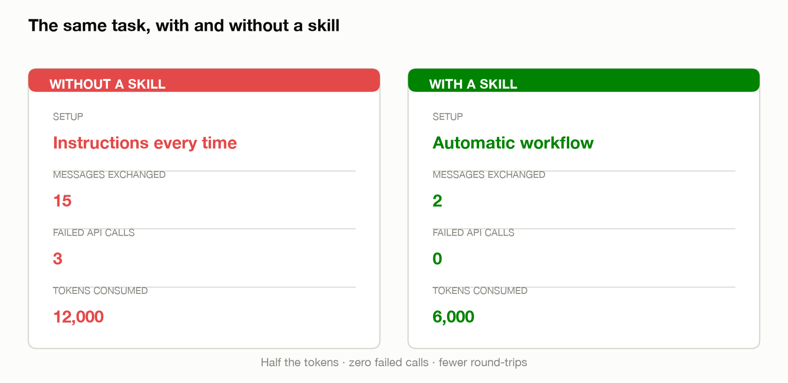
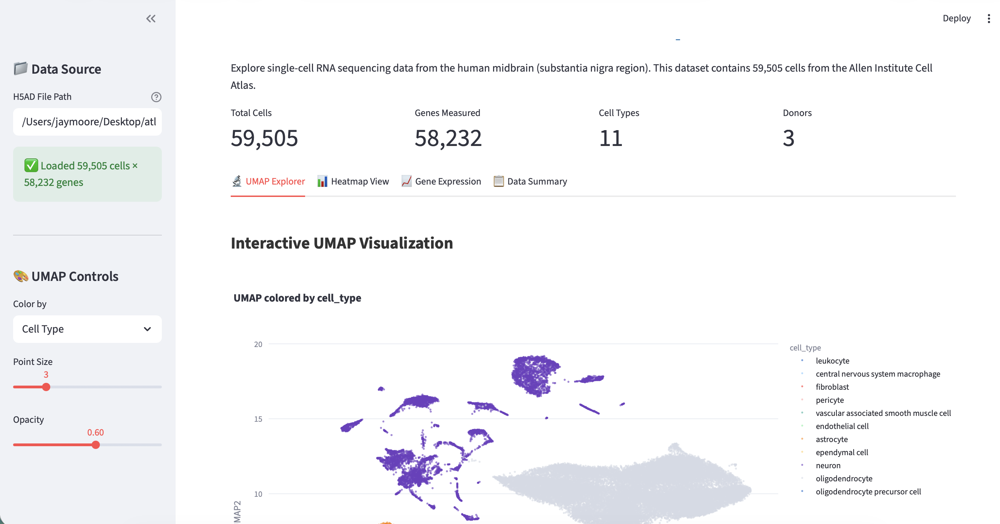

Two questions before we start
1. Upside
How much could AI help you do your work over the next 12 months?
2. Risk
How much risk could AI create for you in your work over the next 12 months?
We keep the two answers separate and repeat the exact same poll at the end of Day 2. There is no preferred answer.
Two days, one arc
Day 1 · How one agent works (and fails)
- 3:00 Stack, privacy, failure modes, Lancet 2026 audit
- 4:00 Prompting, context, pricing & skills (Corpas 2026)
- 5:00 Penguins demo + Exercise 1 Sandbox: Act, Fail, Check
Day 2 · From one agent to a research system
- 3:00 RAG, MCP, governance + Single Cell Portal website demo
- 4:00
Stophooks, adversarial agents, swarms + Exercise 2 PubMed audit - 5:00 Rule files, Second Brain demo & lab AI policy
The core loop: propose tool → execute → read result

The model never touches your files directly — the harness executes each tool call and feeds the output back into the loop.
You choose the harness, provider, and model independently

Provider choice determines where your data goes
Rule of thumb: Never send patient data, unpublished clinical cohorts, or credentials to free or training-enabled endpoints.
Fabricated citations across 2.5M biomedical papers
Discussion (5 min)
- How would you check one reference? How would you check two hundred?
- What does a missing PubMed record prove — and what does it not prove?
Plausible output is the hardest failure mode
1. Completed work
Did the file get written, and does it pass an independent check?
2. Process quality
Did it retrieve primary sources, or produce a fluent summary of an unread paper?
3. Resource use
How many tokens, turns, and retries did it burn getting there?
Use Plan mode before Build mode
Vague prompt (invites silent assumptions)
"Analyse my dataset and make some plots."
- Agent guesses how to handle
NA/ zeros - Picks arbitrary statistical tests
- Writes 200 lines before you see a plan
Structured prompt + Plan mode
Goal + Input + Constraints + Verification
- Inspects files first, asks clarifying questions
- Surfaces edge cases before touching disk
- You approve the plan, then switch to
Build
Past ~70% full, early instructions get buried (context rot)

Inspect with /context · compress mid-task with /compact (~97% reduction) · reset between tasks with /clear.
Every turn re-sends the whole window — context is a billing issue

50 messages × 150k input tokens: $15.00 on Claude Sonnet 5.5 · $60.00 on Fable 5.2 · $0.38 on DeepSeek V4.1 Flash.
A SKILL.md beats upgrading the model
A skill is not code and not a tool — it is a plain Markdown specification in .claude/skills/<name>/SKILL.md that changes how the agent uses its existing tools.
Half the tokens, zero failed calls, fewer round-trips

Journal Club Slides: raw prompt vs /pptx skill
/pptx Make a 5-slide journal club presentation for:
https://www.nature.com/articles/s41588-024-01919-z
Keep word usage low, include main figures, summarise key takeaways.Takeaway: Write down your lab's figure standards, analysis conventions, and slide rules once in .claude/skills/ — commit them to Git so they travel with the code.
Palmer Penguins: steer before it writes code
Make publication-ready scatter plots comparing bill length and flipper length
across penguin species in penguins.csv, and export summary statistics.1. Plan mode
Inspects penguins.csv and asks clarifying questions before touching disk.
2. Build mode
Writes and runs the script, fixes errors, outputs figures + table.
3. Check
Inspect sample counts (NA rows) and verify numbers against the CSV.
Sandbox: Act, Fail, Check
Setup (3 files from jaydata.bio/physalia)
samples.json— onenull(failed well) and one genuine0analyse.py— silently countsnullas0check.py— independent checker
Four steps
- Run
analyse.py,check.py, andshasum check.py - 2a: Vague prompt (no checker) — does it catch the bug?
- 2b: Repair against
check.py(watch the0trap!) - Re-run
shasum check.pyto confirm no tampering
MCP connects agents to real systems — controls are on you
RAG vs MCP
RAG retrieves static text chunks; MCP exposes live, typed tools (PubMed, GitHub, internal DBs).
Fixed overhead
Every registered MCP tool consumes context tokens on every turn — only enable what you need.
Data boundary
Keep clinical/unpublished data off free or training-enabled endpoints; log every query.
Single Cell Portal from a 416 MB .h5ad
- Dataset: Allen Institute Adult Human Brain Atlas — midbrain snRNA-seq (59,505 cells × 58,232 genes, 11 cell types)
- Prompt (Plan mode):
Build an interactive viewer for my single-cell RNA data - Publish: Push to GitHub via
ghCLI for lab-wide access

The agent cannot finish until a reviewer passes the figure
1. Agent exits
Writes plot.py, renders figure.png, and tries to stop.
2. Cheap checks
figure-gate.py checks file exists, is newer than plot.py, plausible size.
3. Fresh reviewer
Spawns claude -p to inspect the PNG against review-criteria.md.
4. Block or pass
Returns {"decision":"block"} with faults — up to a hard 4-round budget.
Every loop needs two things: an independent stopping check and a hard attempt limit.
A skill is instructions; an agent is a separate remit
.claude/skills/reproducible-analysis/SKILL.md
---
name: reproducible-analysis
description: Use when writing analysis
scripts that produce a number or figure.
---
## Pin inputs and random seeds
Record exact input paths and set a seed.
## Stop conditions
If units or metadata are missing, stop..claude/agents/adversarial-statistician.md
---
name: adversarial-statistician
description: Reviews an analysis from the
position that it is probably wrong.
tools: Read, Grep, Glob
---
Check sample independence, NA/zero handling,
and multiple testing. Report file + line.An agent that agrees with you is not doing the job. Give reviewers read-only tools only.
Subagent → Orchestrator → Swarm
A. Single Subagent
Spawn 1 read-only adversarial-statistician on Day 1's analyse.py + samples.json. Main context stays clean; returns a 5-line verdict.
B. Orchestrator (1 → 3)
Launch adversarial-statistician, reproducibility-auditor, and data-governance-reviewer in parallel. The output is the disagreement.
C. Sharded Swarm
Split references.txt into 3 shards (1–5, 6–10, 11–15). Separate output TSVs (no shared writes); final pass merges & verifies.
Audit a reference list against PubMed
Closing the loop on Topaz et al. (Lancet 2026) using references.txt (15 entries: real papers, 1 title typo, 1 arXiv preprint, 1 fabricated 2025 citation).
| Step | Pattern | What to watch |
|---|---|---|
| 1 | One agent, no loop | Baseline time and /context growth |
| 2 | Subagents (groups of 5) | Each writes its own results_<group>.tsv; compare main context |
| 3 | 3-round retry loop | Re-query unresolved rows by author+year & title; recovers #13, never guesses a PMID |
| 4 | Manual verification | Open 3 "found" PMIDs yourself — did any match the wrong paper? |
CLAUDE.md + Karpathy-style Second Brain
- Rule files:
CLAUDE.md/AGENTS.mdin project root — standing instructions loaded every session. - Second Brain: Drop PDFs into
raw/→ Claude compiles linkedwiki/notes → view graph in Obsidian. - Worked example: Akbari et al. & Barton et al. (2026) ancient-DNA papers linked by shared authors, methods & concepts.

Four rules for a lab AI use policy
Practical baseline
- Data boundary: No patient or unpublished data on free/training tiers.
- Independent checks: Every number, figure, and citation verified outside the generating turn.
- Shared conventions: Commit
CLAUDE.md,.claude/skills/, and.claude/agents/to Git. - Transparency: Record which models, skills, and checks were used.
Closing Poll (1–5)
1. How much could AI help your work over the next 12 months?
2. How much risk could AI create for your work over the next 12 months?
Q&A · All slides, demos & downloads stay live at jaydata.bio/physalia.